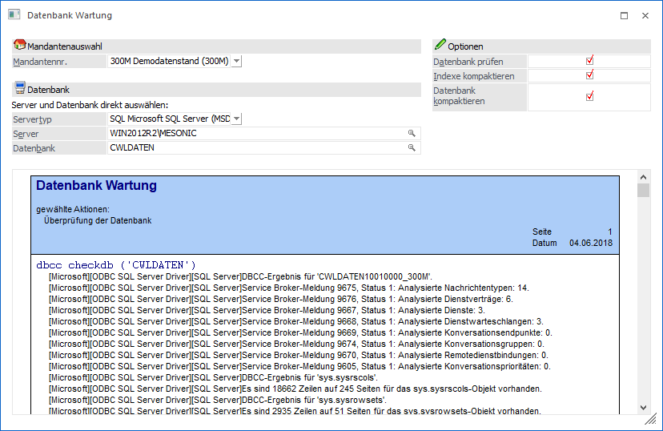
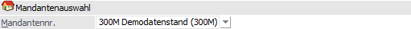
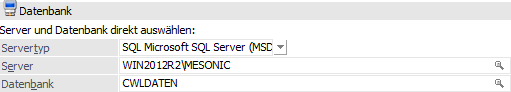
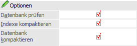
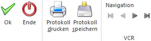

Über den Menüpunkt
1 WinLine ADMIN
1 System
1 Datenbank Wartung
können bestehende Datenbanken gewartet werden.
Die Wartung von Datenbanken ist sehr wichtig, da die Wartung auch die Performance der Datenbank verbessert. D.h. wenn die Datenbank regelmäßig gewartet wird, wird auch die Performance spürbar besser sein, als wenn nie eine Datenbankwartung durchgeführt wird.
Hinweis
Wenn größere Datenmengen bewegt werden (z.B. Datenimport, Jahresabschluss, Mandantenanlage oder dergleichen), dann sollte im Anschluss daran auch eine Datenbankwartung durchgeführt werden.

Mandantenauswahl

Ø Mandantennr.
Wird aus der Auswahllistbox ein Mandant gewählt, dann werden die Felder "Typ", "Server" und "Datenbank" mit den entsprechenden Werten ausgefüllt. Wenn kein Mandant ausgewählt wird, dann können die nachfolgenden Felder individuell ausgefüllt werden (das kann auch gemacht werden, wenn ein Mandant ausgewählt wurde).
Datenbank

Durch die Auswahl eines Mandanten wird dieser Bereich automatisch mit den jeweiligen Daten gefüllt.
Ø Servertyp
Aus der Auswahlliste kann gewählt werden, welcher Typ von Datenbank gewartet werden soll. Dabei stehen folgende Optionen zur Verfügung:
ü DAO - Microsoft
Access
Hierdurch können Microsoft Access-Datenbanken (*.mdb) gewartet werden.
In der weiteren Folge kann nur die Aktion "Datenbank kompaktieren" gewählt
werden.
ü SQL - Microsoft SQL Server
(MSDE)
Damit können Datenbank des Microsoft SQL-Servers oder der MSDE
bearbeitet werden.
ü POS - PostgreSQL
Die Funktion
wird aktuell nicht unterstützt.
Ø Server
Je nach Servertyp wird hier der Zielort der Wartungsquelle angegeben.
ü DAO - Microsoft Access
Es wird
das Verzeichnis angegeben, in welchem sie die Access-Datenbank befindet.
ü SQL - Microsoft SQL Server
(MSDE)
In diesem Feld muss der Name des Computers eingegeben werden, auf dem
der SQL-Server installiert ist (z.B. "WIN2012R2"). Sollte am SQL-Server mit
Instanzen gearbeitet werden, so ist auch die Angabe der Instanz notwendig (z.B.
"MESONIC").
Durch Drücken der F9-Taste kann nach allen im Netzwerk
vorhandenen SQL-Servern gesucht werden. Nach Bestätigung des Namens muss der
Benutzername und das Kennwort für den SQL-Server eingegeben werden. Erst dann
kann mit den weiteren Eingaben fortgesetzt werden.
Hinweis
Sollte per F9-Taste der gewünschte SQL-Server nicht angeboten werden, so könnte eine Ursache sein, dass der sogenannte "SQL Server-Browser-Dienst" nicht installiert oder aktiviert wurde. In solch einem Fall müsste der Server manuell erfasste werden.
Ø Datenbank
Hier wird die Access- bzw. Microsoft SQL-Datenbank eingegeben, für welche die Wartung durchgeführt werden soll. Durch Drücken der F9-Taste kann nach allen Datenbanken gesucht werden.
Optionen

In diesem Bereich kann definiert werden, welche Aktionen bei der Wartung durchgeführt werden sollen.
Ø Datenbank prüfen
Wenn diese Option gemeinsam mit dem Typ "SQL - Microsoft SQL Server (MSDE)" aktiviert wird, dann wird der Befehl "dbcc checkdb" abgesetzt. DBCC CHECKDB führt eine Überprüfung der physischen Konsistenz für indizierte Sichten durch. DBCC CHECKDB ist die sicherste Reparaturanweisung, da der größtmögliche Bereich an Fehlern gefunden und behoben werden kann. DBCC CHECKDB überprüft die Integrität aller Objekte in einer Datenbank. Es ist nicht notwendig, DBCC CHECKALLOC oder DBCC CHECKTABLE auszuführen, wenn Sie DBCC CHECKDB ausführen oder vor kurzem ausgeführt haben.
DBCC CHECKDB führt dieselben Prüfungen durch wie eine Kombination der Ausführung von DBCC CHECKALLOC und DBCC CHECKTABLE für alle Tabellen in der Datenbank.
Die DBCC-Anweisung sammelt Informationen und scannt das Protokoll nach zusätzlichen Änderungen, wobei die beiden Gruppen von Informationen verbunden werden, um nach dem Scannen eine konsistente Sicht der Daten zu erstellen.
DBCC CHECKDB prüft für jede Tabelle die Verknüpfungen und Größen von text-, ntext- und image-Seiten sowie die Reservierung aller Seiten in der Datenbank.
DBCC CHECKDB überprüft für jede Tabelle der Datenbank folgendes:
ü Prüft, ob die Daten- und Indexseiten korrekt verknüpft sind.
ü Prüft, ob die Indizes in der ordnungsgemäßen Sortierreihenfolge sind.
ü Prüft, ob die Zeiger konsistent sind.
ü Prüft, ob die Daten auf jeder Seite sinnvoll sind.
ü Prüft, ob die Seitenoffsets sinnvoll sind.
Ø Indexe kompaktieren
Wenn diese Option gemeinsam mit dem Typ "SQL - Microsoft SQL Server (MSDE)" aktiviert wird, dann wird der Befehl "dbcc dbreindex" für jede Tabelle der Datenbank durchgeführt. Die DBCC DBREINDEX-Anweisung erstellt einen Index oder alle Indizes für eine Tabelle neu. Aufgrund der Möglichkeit, Indizes dynamisch neu zu erstellen, können Indizes mit PRIMARY KEY- oder UNIQUE-Einschränkungen neu erstellt werden, ohne diese Einschränkungen zu löschen und neu zu erstellen. Dies hat zur Folge, dass ein Index neu erstellt werden kann, ohne über die Tabellenstruktur oder Einschränkungen informiert zu sein, was nach einem Massenkopieren von Daten in die Tabelle vorkommen kann.
Ø Datenbank kompaktieren
Wenn diese Option gemeinsam mit dem Typ " DAO - Microsoft Access" aktiviert wird, dann wird die Access-Datenbank (*.mdb) repariert und kompaktiert.
DBCC SHRINKDATABASE verkleinert Datendateien pro Datei. Jedoch werden von DBCC SHRINKDATABASE die Protokolldateien so verkleinert, als lägen alle Protokolldateien in einem zusammenhängenden Protokollpool vor.
Buttons

Ø Ok
Durch Anklicken des Buttons "Ok" bzw. der Taste F5 wird die Wartung der angegebenen Datenbank ausgeführt.
Ø Ende
Durch Drücken des Buttons "Ende" bzw. der Taste ESC wird das Fenster geschlossen.
Ø Protokoll drucken
Durch Anwahl des Buttons "Protokoll drucken" wird das Protokoll auf den Drucker bzw. in den Spooler ausgegeben. Die Funktion steht erst nach Beendigung der Wartung zur Verfügung.
Ø Protokoll speichern
Durch Anwahl dieses Buttons wird das Protokoll im Programmverzeichnis unter dem Namen "CWL Database Maintenance Datum Uhrzeit.SPL" (z.B. "CWL Database Maintenance (04-06-2018 11'40'40).SPL") abgelegt. Die Funktion steht erst nach Beendigung der Wartung zur Verfügung.
Ø VCR-Buttons
Für die durchgeführten Aktionen wird ein Protokoll am Bildschirm ausgegeben. Über die so genannten VCR-Buttons kann durch Mausklick zwischen den Seiten des Protokolls geblättert werden.
ü  Damit kann die erste Seite angesprochen werden.
Damit kann die erste Seite angesprochen werden.
ü  Damit kann die vorherige Seite angesprochen werden.
Damit kann die vorherige Seite angesprochen werden.
ü  Damit kann die nächste Seite angesprochen werden.
Damit kann die nächste Seite angesprochen werden.
ü  Damit kann die letzte Seite angesprochen werden.
Damit kann die letzte Seite angesprochen werden.